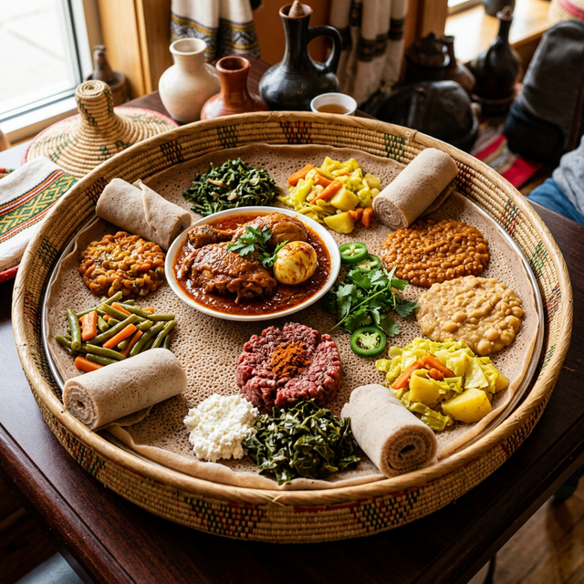

Discover the vibrant customs that make Enkutatash a truly unique celebration.
As the rainy season comes to an end in September, the Ethiopian highlands are suddenly covered in a carpet of brilliant yellow. The Adey Abeba or Meskel flower blooms specifically during this time of year and has become the primary visual symbol of the Ethiopian New Year.
Children often gather these flowers to create small bouquets. On New Year's Day, young girls, dressed in traditional white clothes, go from house to house singing New Year songs and handing out the flowers to neighbors and family, receiving small gifts or bread in return.
No Enkutatash celebration is complete without an elaborate feast. Families spend days preparing traditional dishes, with the centerpiece being Doro Wat, a rich, spicy chicken stew slowly simmered with hard-boiled eggs and a deep red berbere spice blend. It is always served on a communal platter over Injera, the staple fermented flatbread.
Following the meal, a traditional Ethiopian Coffee Ceremony concludes the feast. Coffee beans are roasted on the spot, ground, and brewed in a clay pot called a Jebena, accompanied by burning frankincense.

Gena is a traditional Ethiopian sport that closely resembles field hockey. According to legend, the game has been played for centuries. The game is played with a curved wooden stick (the Gena) and a small wooden ball (the Rur).
During the Enkutatash and other holiday seasons, communities gather in large open fields, such as Jan Meda in Addis Ababa, to watch or participate in lively, competitive Gena tournaments that involve whole neighborhoods.